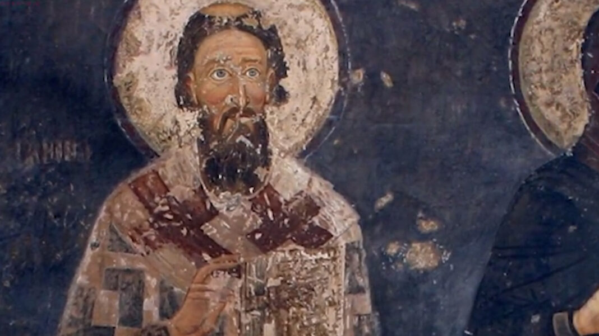

Најважнија дела Светог Саве
Свети Сава је оставио неизбрисив траг у историји српског народа кроз своја дела на верском, просветном и државном плану. Његов рад обухвата:
- Оснивање аутокефалне Српске православне цркве – године 1219. постаје први архиепископ нове, самосталне цркве.
- Манастир Хиландар – заједно са оцем Стефаном Немањом основао је манастир Хиландар на Светој Гори, духовни центар српског народа.
- Законоправило (Номоканон) – саставио је први српски црквени законик који је регулисао црквени и грађански живот.
- Оснивање епархија и школа – основао је више епархија широм Србије и подстицао развој школства и образовања.
- Дипломатска мисија и мирење браће – помагао је у помирењу браће (Стефана и Вукана) и учвршћивању стабилности државе.
- Ходочашћа и мисије – путовао је по Светој Земљи, Византији и Бугарској, јачајући везе са православним светом.

Његов утицај и данас је присутан у образовању, законодавству, култури и вери српског народа.